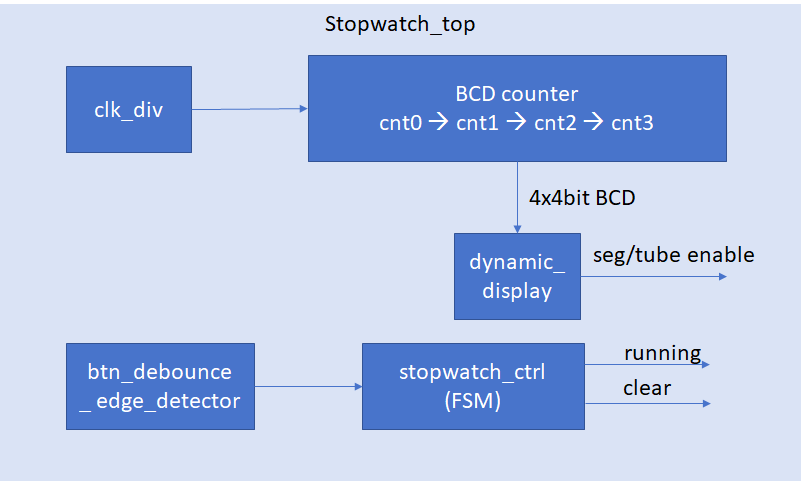

Digital Logic: Integrated Project I—Stopwatch Timing Core
Objectives
- Understand the overall architecture and module decomposition of the stopwatch project.
- Implement a BCD counter—a modulo-10 counter suitable for seven-segment display output.
- Cascade four BCD counters into a counting chain covering 00.00–99.99.
- Use a clock divider to generate a 100 Hz reference pulse.
- Verify the timing core through simulation and LED outputs.
1. Stopwatch Project Overview
1.1 Project Goal
Complete a full stopwatch system over three weeks and experience a modular development flow:
Lab10：计时核心（本周）→ Lab11：显示与控制 → Lab12：系统集成
1.2 Stopwatch Functions
- Four-digit display in
SS.ccformat (seconds and hundredths), covering 00.00–99.99 - Two buttons:
- Start/Stop: Start or pause timing
- Reset: Clear the value while paused
- Resolution: 10 ms (one hundredth of a second)
1.3 Module Architecture

This week's task: Implement the upper portion inside the dashed box—the clk_div module and BCD counter chain.
2. BCD Counter
2.1 Why Use BCD Instead of Binary?
The stopwatch must display decimal digits on seven-segment displays. A single binary counter that counts to 9999 would require a relatively complex binary-to-BCD conversion.
A simpler solution is to cascade four modulo-10 counters (BCD counters). Each counter directly produces one decimal digit from 0 through 9 for the seven-segment decoder.
2.2 BCD Counter Code
This is the counter_mod with its modulus set to 10:
module bcd_counter (
input clk,
input rst_n,
input en,
output reg [3:0] cnt,
output carry
);
assign carry = (cnt == 4'd9) && en;
always @(posedge clk or negedge rst_n) begin
if (!rst_n)
cnt <= 4'd0;
else if (en) begin
if (cnt == 4'd9)
cnt <= 4'd0;
else
cnt <= cnt + 1'd1;
end
end
endmodule
2.3 Cascading Four Counters
tick_100hz → [百分秒个位] ─carry→ [百分秒十位] ─carry→ [秒个位] ─carry→ [秒十位]
cnt0 (0-9) cnt1 (0-9) cnt2 (0-9) cnt3 (0-9)
Display format: [cnt3][cnt2].[cnt1][cnt0] = SS.cc
Cascade logic:
wire tick_100hz;
wire carry0, carry1, carry2;
wire [3:0] cnt0, cnt1, cnt2, cnt3;
// 100Hz 基准脉冲（10ms 一次）
clk_div #(.MAX_COUNT(1_000_000)) u_100hz (
.clk(clk), .rst_n(rst_n), .tick(tick_100hz)
);
// 百分秒个位 (0-9)
bcd_counter u_cs0 (
.clk(clk), .rst_n(rst_n), .en(tick_100hz),
.cnt(cnt0), .carry(carry0)
);
// 百分秒十位 (0-9)
bcd_counter u_cs1 (
.clk(clk), .rst_n(rst_n), .en(carry0),
.cnt(cnt1), .carry(carry1)
);
// 秒个位 (0-9)
bcd_counter u_s0 (
.clk(clk), .rst_n(rst_n), .en(carry1),
.cnt(cnt2), .carry(carry2)
);
// 秒十位 (0-9)
bcd_counter u_s1 (
.clk(clk), .rst_n(rst_n), .en(carry2),
.cnt(cnt3), .carry() // 最高位进位不使用
);
2.4 Carry Timing Analysis
Consider the transition from 09.99 to 10.00 when one tick_100hz pulse arrives:
| Signal | Current value | en |
Operation | New value |
|---|---|---|---|---|
| cnt0 | 9 | tick_100hz=1 | 9→0, carry0=1 | 0 |
| cnt1 | 9 | carry0=1 | 9→0, carry1=1 | 0 |
| cnt2 | 9 | carry1=1 | 9→0, carry2=1 | 0 |
| cnt3 | 0 | carry2=1 | 0→1 | 1 |
Result: 10.00 ✓. All updates complete on the same clock edge.
3. Clock-Divider Parameters
| Purpose | Target frequency | MAX_COUNT |
Description |
|---|---|---|---|
| Hundredths reference | 100 Hz | 1,000,000 | 100 MHz / 1,000,000 = 100 Hz |
| Accelerated simulation | — | 10 | Used during simulation |
4. Laboratory Tasks for This Week
Step 1: Write the bcd_counter Module
Following the code in Section 2.2, create bcd_counter.v.
Step 2: Write the clk_div Module
Reuse the clock-divider code to create clk_div.v.
Step 3: Write a Test Top-Level for the Timing Core
Create a temporary top-level module containing only the clock divider, counter chain, and LED outputs. Use it to verify the timing function:
module stopwatch_core_test (
input clk,
input rst_n,
output [3:0] led_bg, // 显示百分秒个位（cnt0）
output [3:0] led_bs, // 显示百分秒个位（cnt1）
output [3:0] led_sg, // 显示秒个位（cnt2）
output [3:0] led_ss // 显示秒十位（cnt3）
);
wire tick_100hz;
wire carry0, carry1, carry2;
wire [3:0] cnt0, cnt1, cnt2, cnt3;
clk_div #(.MAX_COUNT(1_000_000)) u_100hz (
.clk(clk), .rst_n(rst_n), .tick(tick_100hz)
);
bcd_counter u_cs0 (.clk(clk), .rst_n(rst_n), .en(tick_100hz),
.cnt(cnt0), .carry(carry0));
bcd_counter u_cs1 (.clk(clk), .rst_n(rst_n), .en(carry0),
.cnt(cnt1), .carry(carry1));
bcd_counter u_s0 (.clk(clk), .rst_n(rst_n), .en(carry1),
.cnt(cnt2), .carry(carry2));
bcd_counter u_s1 (.clk(clk), .rst_n(rst_n), .en(carry2),
.cnt(cnt3), .carry());
assign led_bg = cnt0;
assign led_bs = cnt1;
assign led_sg = cnt2;
assign led_ss = cnt3;
endmodule
Step 4: Simulate and Verify
`timescale 1ns/1ps
module tb_stopwatch_core();
reg clk, rst_n;
wire [3:0] cnt0, cnt1, cnt2, cnt3;
wire carry0, carry1, carry2;
wire tick;
clk_div #(.MAX_COUNT(10)) u_tick (
.clk(clk), .rst_n(rst_n), .tick(tick)
);
bcd_counter u0 (.clk(clk), .rst_n(rst_n), .en(tick),
.cnt(cnt0), .carry(carry0));
bcd_counter u1 (.clk(clk), .rst_n(rst_n), .en(carry0),
.cnt(cnt1), .carry(carry1));
bcd_counter u2 (.clk(clk), .rst_n(rst_n), .en(carry1),
.cnt(cnt2), .carry(carry2));
bcd_counter u3 (.clk(clk), .rst_n(rst_n), .en(carry2),
.cnt(cnt3), .carry());
initial clk = 0;
always #5 clk = ~clk;
initial begin
$monitor("time=%6d: %d%d.%d%d",
$time, cnt3, cnt2, cnt1, cnt0);
rst_n = 0; #30; rst_n = 1;
// 等待计到 01.00 (100个tick = 100*10*10ns = 10000ns)
#120000;
$finish;
end
endmodule
What to inspect in the simulation:
- Count sequence: 00.00 → 00.01 → ... → 00.09 → 00.10 → ... → 00.99 → 01.00
- Correct carries: The seconds value increments after 100 hundredths
Step 5: Verify on the Board
- Connect the LED outputs of
stopwatch_core_testto LEDs on the development board. - Connect
rstto a button. - Observe the binary count for hundredths and seconds.